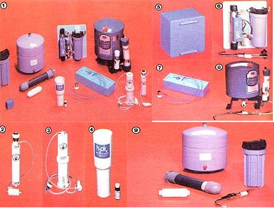

[1] The various mater treatment devices reviewed in this issue are of widely different size, approach, and scope. Here are: [2] Kirschmann's RO-20 . . . [3] Kirschmann's RO-40 . . . [4] the H20K . . . . . [6] the Clean Water Systems C WS-2 ultraviolet purifier... [7] the Aqua-Mite . . . [8]Technic Central System's Kleanwater One . . . and [9] Culligan's Aqua-Cleer H-5.